TPR's Northeast Trip
Bowcraft & NYC Coney Island Quassy Lake Compounce Six Flags New England
Palace Playland Funtown Splashtown Canobie Lake Park La Ronde
Great Escape
Six Flags Great Adventure
Unfortunetly, this was the last day of the trip. And during the trip, I kept all my wristbands on, so you can see just how much I collected. =(
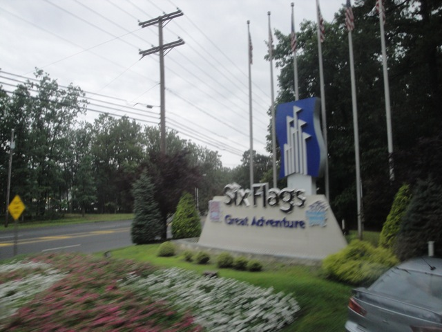
But the good news is that we get to end this awesome awesome trip at Six Flags Great Adventure.
 That's quite a skyline you've got there Great Adventure. Looking foreword to riding everything.
That's quite a skyline you've got there Great Adventure. Looking foreword to riding everything.
We'll get to you later Green Lantern.
 Just in case you forgot where we are.
Just in case you forgot where we are.
 Our morning started out with an hour of ERT on Nitro!!!
Our morning started out with an hour of ERT on Nitro!!!
 Nitro is definetly one of the better B&M Hypers out there.
Nitro is definetly one of the better B&M Hypers out there.
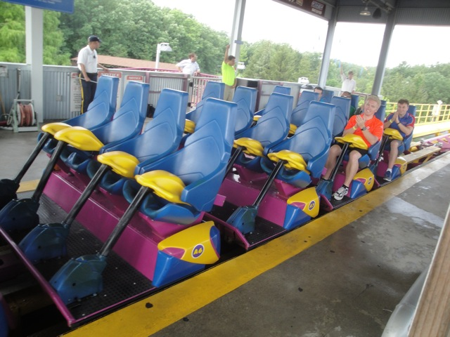
And during this ERT session, they were running 3 trains. That's right. Three train operations during ERT!!! That's just f*cking amazing!!! =)
 Not only did we also have ERT on the Dark Knight, but we had it with the lights on!!! So it was really cool seeing all of the lights.
Not only did we also have ERT on the Dark Knight, but we had it with the lights on!!! So it was really cool seeing all of the lights.
 And after our hour of ERT on Nitro & Dark Knight, we then got another half hour of ERT on Green Lantern!!!
And after our hour of ERT on Nitro & Dark Knight, we then got another half hour of ERT on Green Lantern!!!
This morning just keeps getting better and better.
If you ever wanted a coaster that was just literally the offspring between Mantis & Riddlers Revenge, it's totally Green Lantern. It's definetly the missing link in the evolution of B&M Stand Up Coasters.
 To make this morning even better, we got a bonus mini ERT session on Kingda Ka!!!!
To make this morning even better, we got a bonus mini ERT session on Kingda Ka!!!!
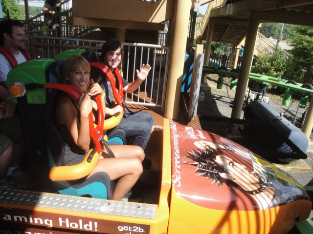
"Yeah. This morning is freaking awesome."
 Yeah. Kingda Ka is FAST!!!! Especially when you ride it in the very front row!!!
Yeah. Kingda Ka is FAST!!!! Especially when you ride it in the very front row!!!
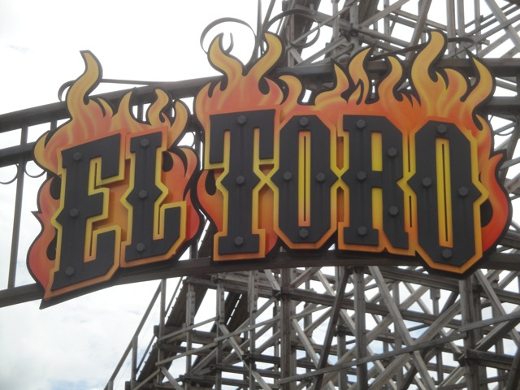
But who gives a flying f*ck about Kingda Ka when we have EL TORO!!!!!!!
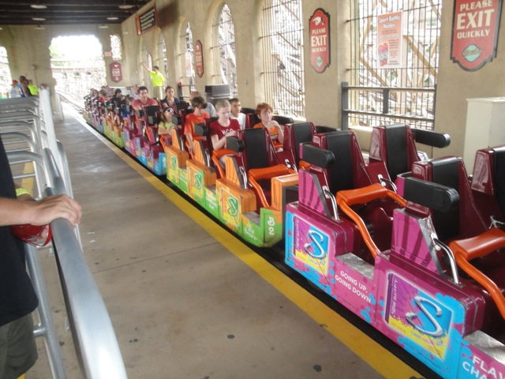
"All right. Come oout and admit. Who's trying to turn El Toro gay? I know it was one of you guys, so just come on and admit it!!!"
 El Toro is without a doubt the best wooden coaster ever ridden by Incrediblecoasters. F*ck Boulderdash and Coaster. El Toro is the star now!!!
El Toro is without a doubt the best wooden coaster ever ridden by Incrediblecoasters. F*ck Boulderdash and Coaster. El Toro is the star now!!!
 Oh yeah. I forgot. They have another woodie at Six Flags Great Adventure.
Oh yeah. I forgot. They have another woodie at Six Flags Great Adventure.
"This ride was lame enough to begin with, but riding this after El Toro, wow is this a peice of flaming crap."
 Don't even pay attention to Rolling Thunder. Just focus on the Rolling Thunder Hill on El Toro and feel it's ejector airness!!!!
Don't even pay attention to Rolling Thunder. Just focus on the Rolling Thunder Hill on El Toro and feel it's ejector airness!!!!
"Hey!!! Don't laugh!!! It may be pink, but I've still got a freaking gun!!!"
 Hmm. Something about this ride seems familiar.
Hmm. Something about this ride seems familiar.
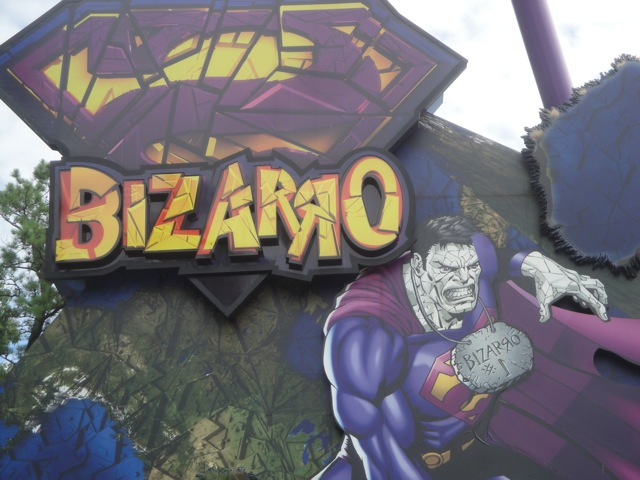
While not nearly as cool as SFNE's Bizarro, this was still a really fun ride.
 And at least here, the fire actually works. ;)
And at least here, the fire actually works. ;)
 Up next, we checked out the park's mine train.
Up next, we checked out the park's mine train.
 Most of the ride was really lame, but this little hill actually had a really good pop of ejector air. =)
Most of the ride was really lame, but this little hill actually had a really good pop of ejector air. =)
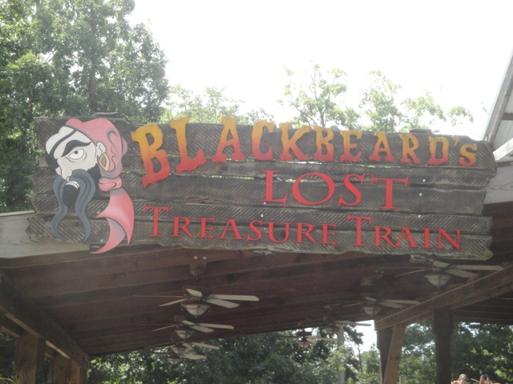
Yeah. They have one of these Tivoli coasters here as well.
These small little coasters are actually kind of fun.
 While not nearly as weird as Lost Coaster @ Indiana Beach, Skull Mountain definetly qualifys as a total "What the f*ck" ride.
While not nearly as weird as Lost Coaster @ Indiana Beach, Skull Mountain definetly qualifys as a total "What the f*ck" ride.
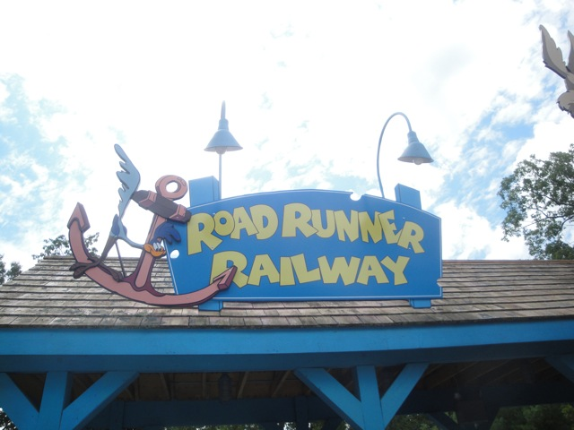
Yep. We really rode it.
Yeah. You know the line by know. Credit Whores.
Is it me or does it look like the Roadrunner is about to take a big dump on Wile E. Coyote?
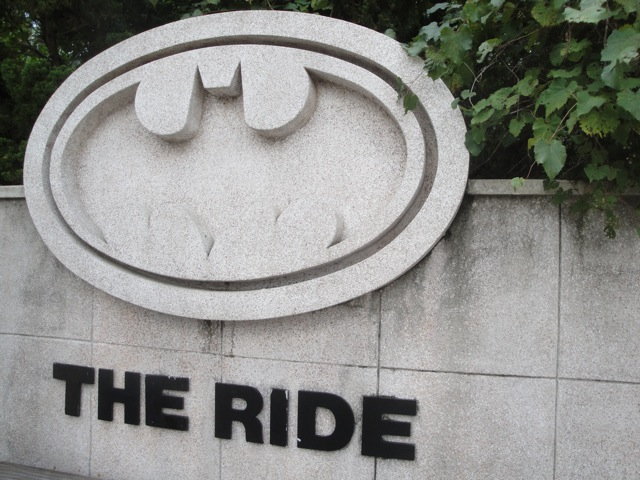
Yeah. Up next would indeed be Batman the Ride.
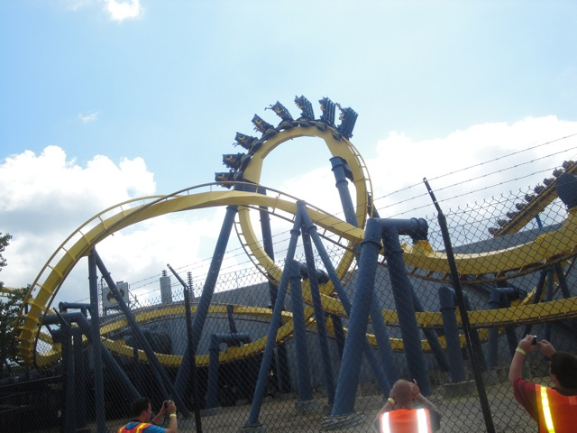
It ran really well here. Definetly stronger than SFMM's Batman.
 "Check it out bitches!!! Six Flags welcomes us because we're special!!!"
"Check it out bitches!!! Six Flags welcomes us because we're special!!!"
I must admit. Lunch was really good and better than average for a theme park.
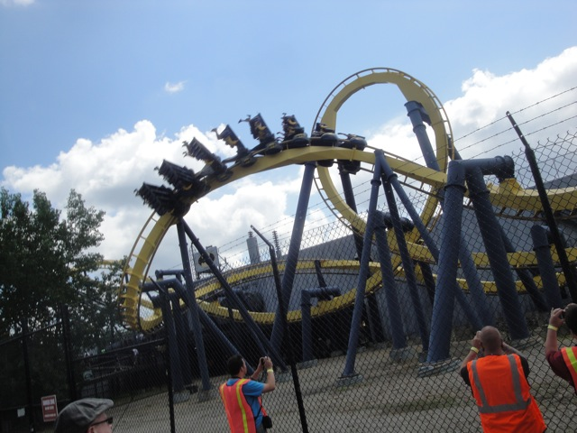
After lunch, the park took those into backstage tour on a really really backstage tour.
 Yeah. We got lots of awesome shots like this!!!
Yeah. We got lots of awesome shots like this!!!
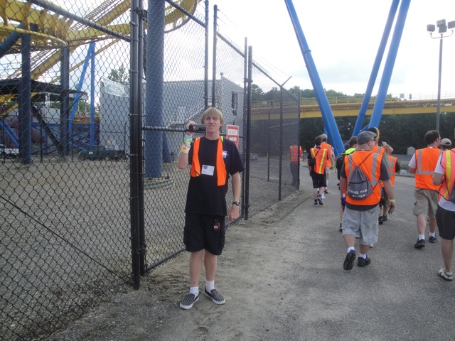
"I'm going to film the crap out of this backstage tour."
Our backstage tour took us under Nitro and got us some really really amazing shots.
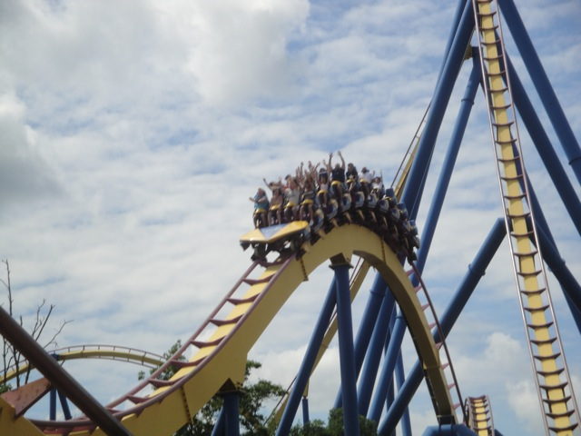
Like this one.
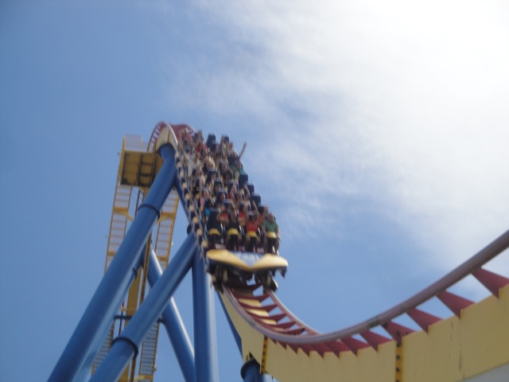
Nitro shots are really hard to get due to it's isolated location going outside the park. But on the backstage tour, we got to film the crap out of it.
 Not many people can get this shot of the first drop. =)
Not many people can get this shot of the first drop. =)
 Mmm. Nitro Goodness.
Mmm. Nitro Goodness.
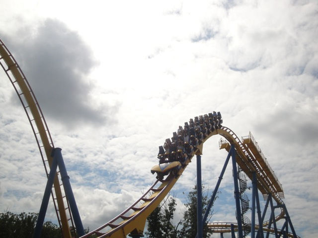
There's a decent pop of airtime coming off of the midcourse brakes.
"I love Nitro. No seriously. I love and want to marry Nitro. Why else would I be hugging it?"
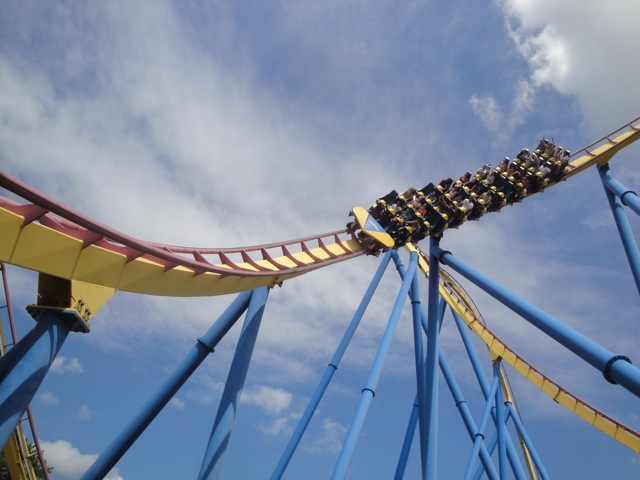
Yet another awesome backstage shot of Nitro.
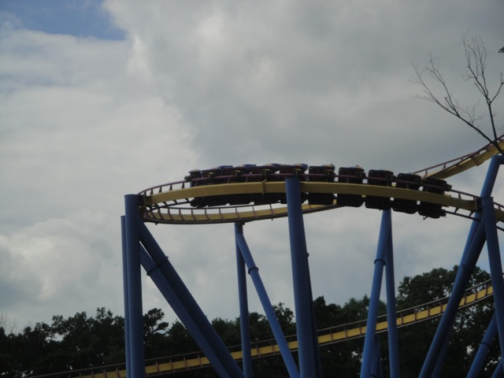
FAKE HELIX OF DEATH!!!!!!
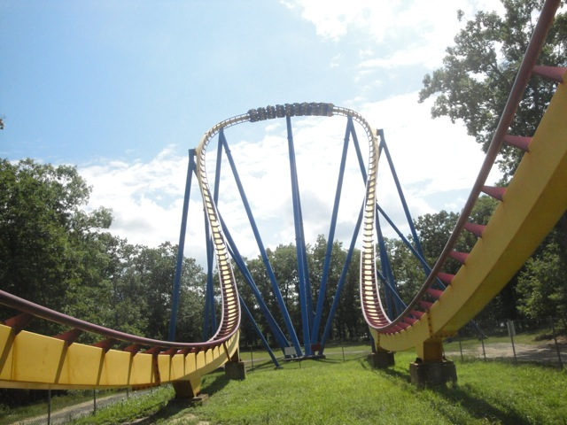
Ooh. The Hammerhead looks really cool from this angle.
 Sweet!! More Nitro goodness!!!
Sweet!! More Nitro goodness!!!
 All right. This hammerhead shot kicks ass. Nuff said.
All right. This hammerhead shot kicks ass. Nuff said.
 *sigh* "Do I really have to keep writing captions for all these Nitro shots? What do you need to read about them, these awesome photos speak for themselves."
*sigh* "Do I really have to keep writing captions for all these Nitro shots? What do you need to read about them, these awesome photos speak for themselves."
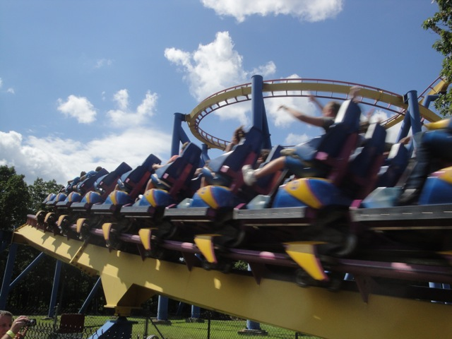
Come back!!! We don't bite!!!! Ok, maybe Ceaser does, but no one else does!!!!
 This photo speaks for itself.
This photo speaks for itself.
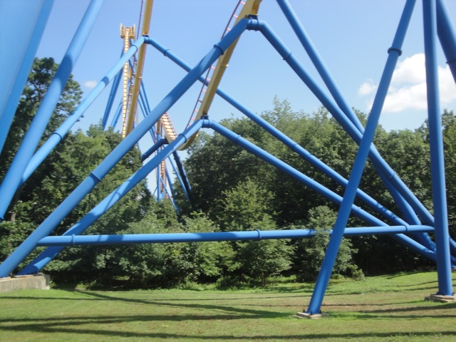
Yeah. Nitros got some funky looking supports.
Yeah. Six Flags Great Adventure looks nice and all. But we have more important things to do...
Like go on a freaking Kingda Ka Backstage Tour!!! =)
 That's a lot of water coming from Kingda Ka.
That's a lot of water coming from Kingda Ka.
 Um. Yeah. Kingda Ka is big. Really freaking big.
Um. Yeah. Kingda Ka is big. Really freaking big.
Aww. Group Photo during the backstage tour.
Kingda Ka looks *slightly* bigger when standing directly under it.
Rolling Thunder from the Kingda Ka backstage tour.
Kingda Ka crotch shot
 Ooh. Twisty bit.
Ooh. Twisty bit.
 Don't worry. You've only got 456 ft to climb.
Don't worry. You've only got 456 ft to climb.
 Yeah, those people look happy now, but just how much happier would they be on El Toro?
Yeah, those people look happy now, but just how much happier would they be on El Toro?
 That camelback at the end really doesn't do much other than slow the train down.
That camelback at the end really doesn't do much other than slow the train down.
 Yeah, if you've ever wanted to see what a train going 128 mph on straight track looks like, your wish just came true. (I pity you if that really is your wish.)
Yeah, if you've ever wanted to see what a train going 128 mph on straight track looks like, your wish just came true. (I pity you if that really is your wish.)
LOL at the girl in the third row.
I simply just have to say thank you for putting on these backstage tours. They really were amazing.
 Time to get the final credit I need at Six Flags Great Adventure.
Time to get the final credit I need at Six Flags Great Adventure.
 Still not impressed by you Superman Ultimate Flight.
Still not impressed by you Superman Ultimate Flight.
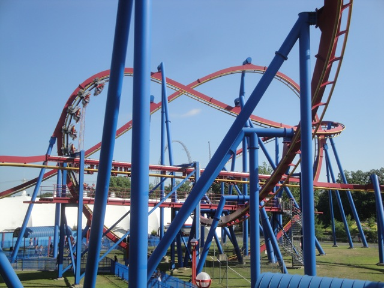
Not even your pretzal loop wows me. Though it does look nice I must admit.
 Yeah. I miss Tatsu.
Yeah. I miss Tatsu.
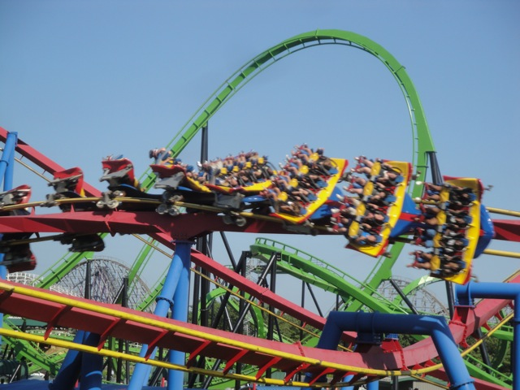
Credit #281.
 Yeah. That washes the Ultimate Flight taste right off. =)
Yeah. That washes the Ultimate Flight taste right off. =)
 Butt, say your good byes to your seat before...too late.
Butt, say your good byes to your seat before...too late.
 It really is one of the best coasters of all time.
It really is one of the best coasters of all time.
Hey Gertrude. Doing some Goose Yoga I see.
 I decided to take another ride on Bizarro simply because that ride is really fun.
I decided to take another ride on Bizarro simply because that ride is really fun.
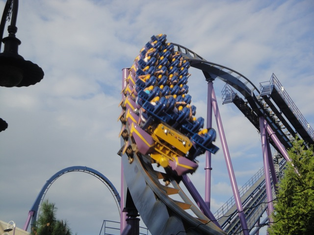
While I do consider it better than Scream due to it's location and soundtrack, I still don't understand the it's so much smoother than Scream claims. They seem equal to me, as in neither of them are rough at all.
Six Flags Great Adventure is one of few parks left with an old school parachute ride. I must admit, they are fun.
 I really liked the dining options at Six Flags Great Adventure. It felt like they went above and beyond typical amusement park crap and had lots of other things such as Nathans Hot Dogs and Teds Cheesesteaks. Why can't see more stuff like this in other Six Flags Parks?
I really liked the dining options at Six Flags Great Adventure. It felt like they went above and beyond typical amusement park crap and had lots of other things such as Nathans Hot Dogs and Teds Cheesesteaks. Why can't see more stuff like this in other Six Flags Parks?
Though if there was any problems I had with Six Flags Great Adventure, this was it. You couldn't get a Freestyle Drink here unless you bought a Souviner Cup. WHAT THE HELL!!!!! What the hell sort of rule is that and why does Six Flags Great Adventure have it!!!? At Six Flags Magic Mountain, I can get a Freestyle Drink with no problems whatsoever without a souviner cup and it's working out quite well for them. So why the hell is Six Flags Great Adventure doing this!!? It doesn't sell more souviner bottles, it just pisses people like me off!!! In fact, I think this is hurting them!!! Here, the Freesyle Drink stand was completely deserted and when requested one, they rejected me since they have it for Souviner Cups only. Meanwhile, the Freestyle Machine at SFMM really seems to be popular and gets buisness. Hmm, pay attention SFGAdv and notice what they're doing right. ;)
Well, they may have that stupid rule, but at least I can actually take my stuff with me on the skyride unlike at a certain park. *cough* Indiana Beach *cough*
 Yeah. Six Flags Great Adventure also has the Houdini ride, which I must admit, really kicks ass.
Yeah. Six Flags Great Adventure also has the Houdini ride, which I must admit, really kicks ass.
While I was on Green Lantern at Six Flags Great Adventure, it turns out that Cody was at Six Flags Magic Mountain riding Green Lantern, at the exact same time. So yeah. We rode Green Lantern at the same time from coast to coast.
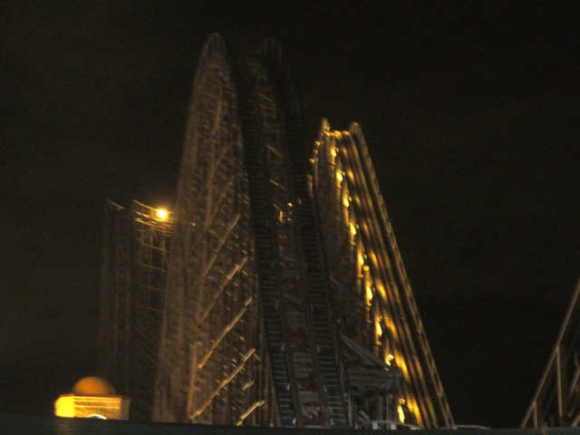
But then I went on El Toro. So I win. =)
Yeah. ERT like this on one of the best coasters ever was insane.
Words can not describe the awesomeness of this ERT session.
And unfortunetly, this is the end of the Northeast Trip. While it sucks that the trip is over, at least it was 9 of the best days ever. This trip kicked ass and I'm totally looking foreword to my 2012 trip.
Home